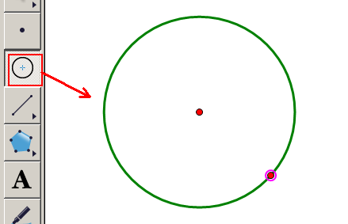

几何画板基础入门教程
作者：TeliuTe 来源：基础教程网
十三、阴影面积 返回目录 下一课求阴影面积一般是图形的一部分，或者两个图形相交的部分；
1、阴影面积
1）用线段画一个三角形，选中三个点，点菜单“构造”三角形的内部“；
2）这时三角形内部就出现了阴影部分，用多边形工具画三角形也会出现；
3）点菜单“度量 - 面积”，就可以得出阴影部分的面积；
4）对于三角形的内接四边形，只要选中四个点，然后点菜单“构造 - 四边形内部”，就可以作出阴影部分来；
5）扇形是由一段弧和两个半径构成，用“画圆工具”画一个圆；

6）用“画点工具”在圆上标出两个点，与圆心构造两条半径；
7）将两点之间按逆时针构造一段弧，隐藏圆和多余的点；
8）只选中圆弧，点菜单“构造 - 弧内部 - 扇形内部”；
9）扇形的两边是半径，经过圆心，一般不是直线，而弓形的底边是弦，是一条直线，一般不经过圆心；
10）弓形与扇形相似，只需连接弧的两个端点即可（箭是假设的）；
11）同样只选中弧，点菜单“构造 - 弧内部 - 弓形内部”；

12）多边形工具画出的图形，右键属性里，可以设置透明度，显示边界可以设置透明；
本节学习了绘制三角形、扇形、弓形阴影的基础知识，如果你成功地完成了练习，请继续学习下一课内容；
本教程由TeliuTe制作|著作权所有
基础教程网：http://teliute.org/
美丽的校园……
转载和引用本站内容，请保留作者和本站链接。